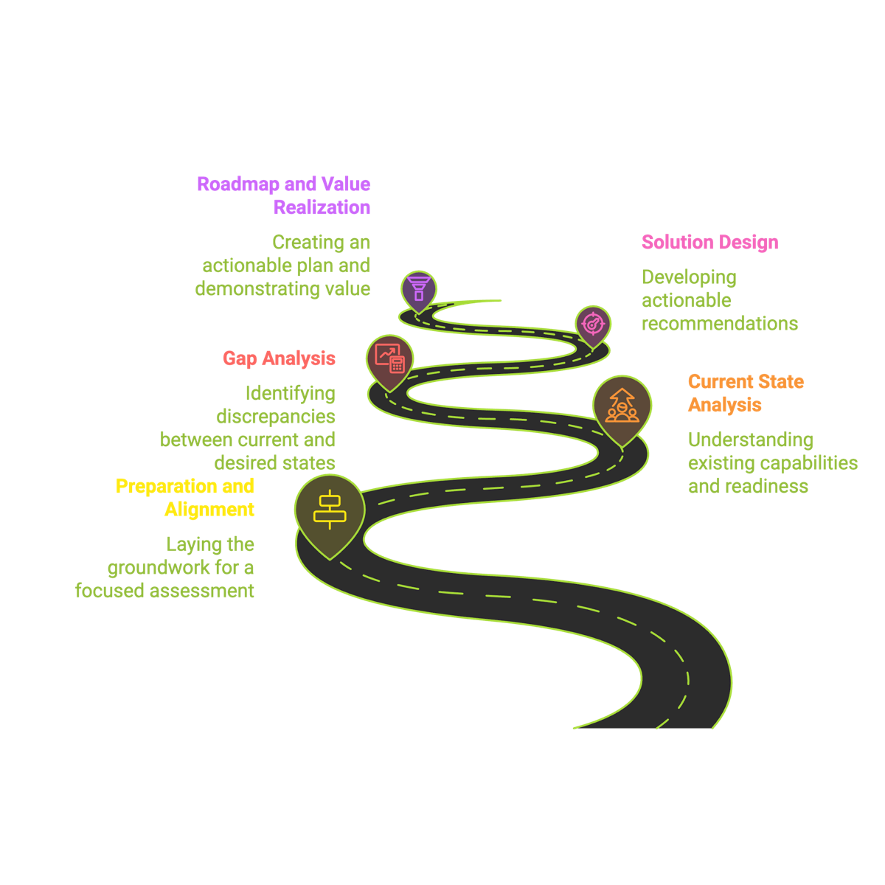
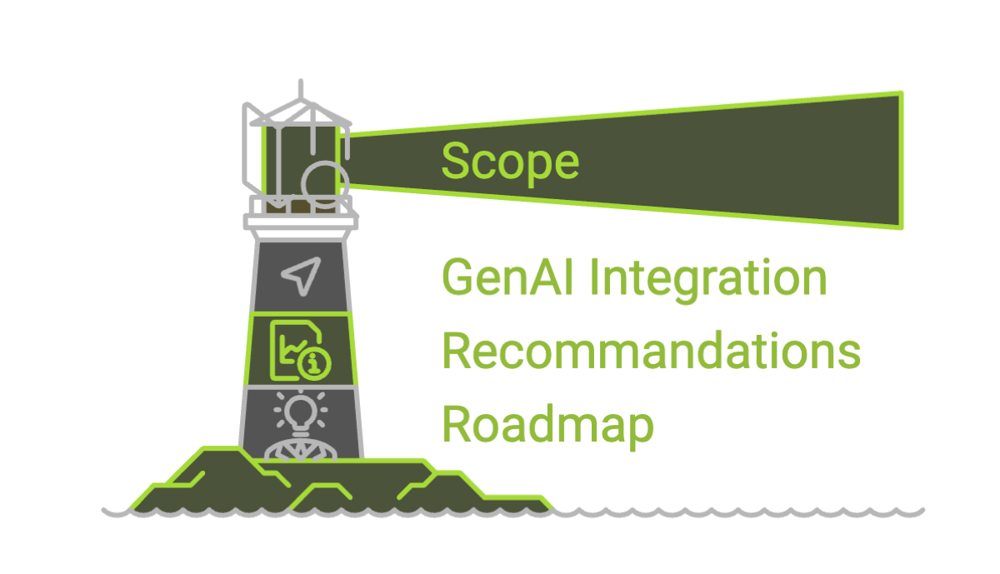
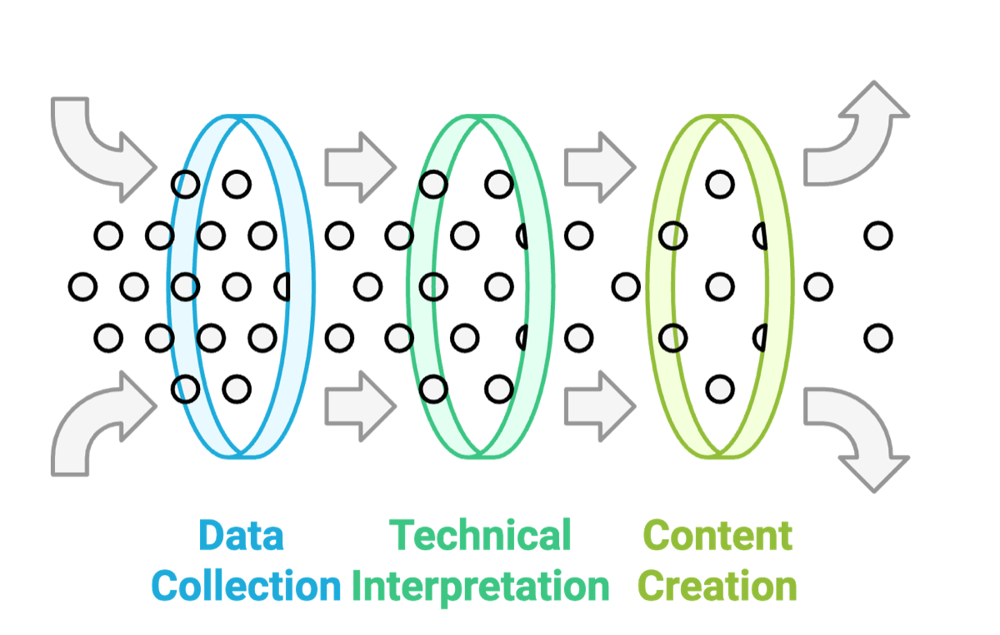
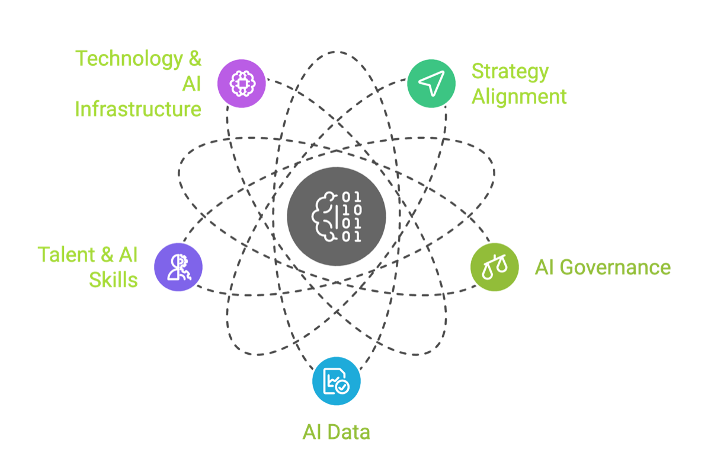
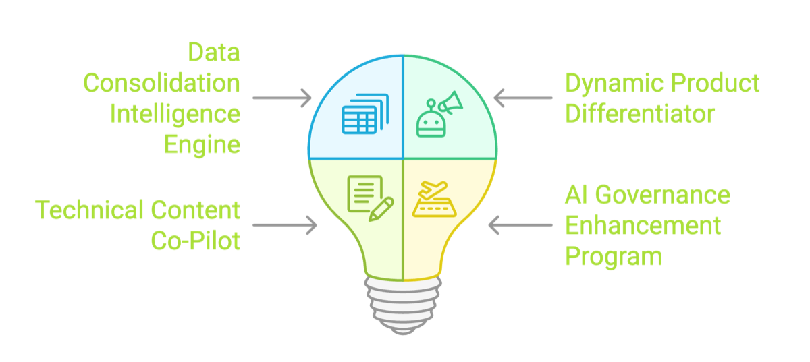
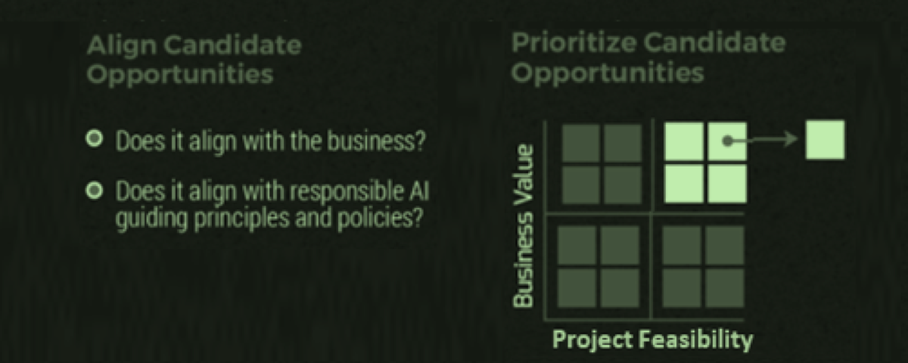
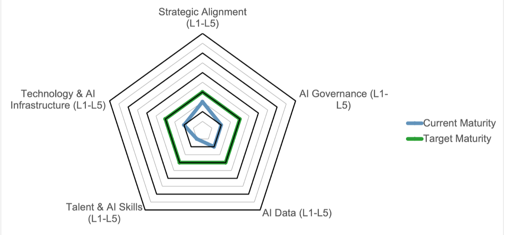

How a company moves from a slow manual workflow to a working AI solution, shown step by step on one real client project.
One minute. I introduce myself in one sentence: I lead AI projects for companies, and today I show you exactly how such a project runs, using one real client.
Nothing today needs code. Every term is explained on the slide where it appears.
At Arc'teryx, the outdoor clothing company, three product experts now prepare each season's product content in one day instead of five.
time and cost of expert work
company standard for every product story
conflicting specs left unchecked
Two minutes. I start with the outcome so you know where we are going. 3 experts × 5 days × 8 hours = 120 hours; at $50 per expert hour that is $6,000. After: 24 hours, $1,200.
The model we used is not special. What the company paid for is the method that chose the right work for AI and proved the value. That method is today's lecture.
We follow the Arc'teryx project from the first meeting to the first working system.
Where does the company stand today?
How is the work done, and where does it hurt?
How a workflow becomes AI features
Priorities, business case, roadmap, first build
One minute. Each new idea appears first in general, then on the real project.
Each step uses the result of the step before. The client approves twice before any system is built.
Two minutes. I press the arrow key for each step. The two red diamonds are where the client signs off: after the proposals and after the roadmap. Only then do we build.
Discovery and design overlap in real life: during design we still meet the experts to confirm requirements and infrastructure.
How we measure where a company stands before we propose any AI.
Ten seconds.
Six blocks. Each block is one part of the assessment; the road shows the same journey from the client's side.






Three minutes. This is the real one-page summary from the Arc'teryx assessment. One block per key press. Blocks 1 and 2 are the discovery work, block 3 is the readiness score, blocks 4 and 5 are the proposals and their priority, block 6 is the plan. The rest of the lecture opens each block.
A dimension is one area of the company. We check the same areas in every company, so results can be compared over time.
Three minutes. One example question per dimension. Strategy: can a leader name the number AI should move? Governance: who checks AI output before a customer sees it? Data: if I ask for last season's specs, do I get one file or ten emails? Talent: do the experts have hours in their week for this? Technology: can a new tool connect to their systems?
Governance is the one companies forget most; it is also the one that stops projects late, when legal or security first see them.
We give the level from questionnaire answers. The level tells us which kind of project is realistic now.
Two minutes. Example questions for AI data: is there one agreed source for product specs? Can a program read the source documents? Do the sources agree? At Arc'teryx the answers were: an Excel sheet filled by hand, mostly emails and PDFs, and 6% of specs in conflict. That is level 1.
When we already know an answer from our own work with the client, we score it ourselves and ask them to confirm.
Overall score 0.5 to 1.5, Exploration. We set a realistic target one level up: Experimentation.

Three minutes. The chart and the observations are the real ones from the report. The inner line is today, the outer line is the target. I point out that a good assessment does not promise transformation; it names the next realistic step.
Data and governance were the weakest, which is why the first solution is about data and why one recommendation was a governance program.
We study how the work is done today, together with the people who do it, and find where time and money are lost.
Ten seconds.
Together they give us the full picture of the work. We write it down in one document: the current state report.
SME, subject matter expert: a person who knows one area of the work deeply. At Arc'teryx, the product education team.
Current state report: every step of the work today, with people, tools, time and pain points, the steps that waste time or money or cause errors.
The experts do one real task on their screen while we watch. People forget steps when they only describe them.
Two minutes. At Arc'teryx the product education team did a live demo of one season's work: emails, PDFs and their Excel sheet. That demo told us more than any interview.
Every season, specs from five teams were checked by hand and turned into content for retail sellers and advertising.
Press → to follow the work one step at a time.
1. For each new product, for example a trail shoe, specs come from five teams in emails, PDFs and spreadsheets. 94% of the information overlaps between teams.
2. Pain point. About 6% of the specs disagree. Design says the shoe weighs 80 g, manufacturing says 85 g. An expert reads everything and decides each value.
3. The agreed values go into one Excel sheet, the single source of truth: the one place everyone trusts for the final value.
4. Pain points. Experts write a nature story for each product and translate specs into words athletes understand. Each writer does it differently.
5. The result is training content for retail sellers and the advertising team: about one week of work for three experts.
Three minutes. This is the current state report in one picture. Red dashed boxes are pain points: expert time spent reading, comparing and rewriting, not on expert judgement.
94% overlap and 6% conflict come from the assessment report. 80 g against 85 g is the type of conflict the team showed us; the product is a generic trail shoe.
Because the problems differ, one AI tool cannot fix all three. Each one needs its own solution.
of specs conflict
Reconcile means making several sources agree on one final value. A problem of reading and comparing.
A nature story shows the product in real use outdoors: temperature, ground, water, wind. It must say what is new compared with last season. A problem of writing with memory.
Athletes do not read spec numbers. Only the experts know the right words. A problem of expert knowledge.
Three minutes. Three different kinds of problem: reading and comparing, writing with memory, and expert knowledge. That is why the solution has three separate features.
28,000 mm is a waterproof rating: a column of water that high would not push through the fabric. The story and the translation sentence are my own examples of the style.
Every proposal must reduce cost, reduce time, or raise quality. The client then changed the list to fit their priorities.
Two minutes. These are the real names from the assessment. The fourth proposal is not a system: it fixes the governance gap from Part 1, so the three solutions can be used safely.
The client asked that a person always approves the final value and the final story. That became a design rule from day one.
How a workflow becomes concrete AI features, and what happens inside each one.
Ten seconds. This is the part most students ask about.
A request is what users need. A capability is one thing technology can do. Where a request meets the capabilities it needs, we get a feature.
| Request from users | Read documents | Expert rules | LLM writing | Search past content | Human review | Feature |
|---|---|---|---|---|---|---|
| Agree one value per spec | ● | ● | ● | ● | Data Consolidation Engine | |
| Story that shows what is new | ● | ● | ● | ● | Product Differentiator | |
| Explain specs to athletes | ● | ● | ● | Technical Content Co-Pilot |
LLM, large language model: AI that reads and writes text, like ChatGPT or Claude.
Reuse: a column used by several rows is built once and shared, here the LLM and human review.
Three minutes. I read row 1 aloud: to agree one value, we must read the documents, apply the experts' rules, let an LLM reason about the conflict, and have a person approve. Four capabilities, one feature.
Each dot later becomes build tasks in the backlog. That is how a design turns into a time and cost estimate.
A document pipeline reads every file, an LLM proposes a value with its evidence, and an expert makes the final decision.
Press → to follow one season's files through the engine.
1. The inputs are the season's real files from the five teams: emails, PDFs and spreadsheets.
2. Document intelligence, software that reads documents even when the text is free-form, pulls out the fields: weight, membrane, sole. One record per source.
3. The engine compares the records field by field and flags every conflict automatically: design 80 g, manufacturing 85 g.
4. The LLM gets the conflict, the source text and the experts' rules, for example for weight, the manufacturing measurement wins. It suggests 85 g and quotes the line it used.
5. An expert accepts or edits in one click. The value goes into the single source of truth with its source. The expert now judges instead of searching.
Three minutes. The key design choice is step 4: the LLM does not decide freely. It follows rules the experts wrote and must show its evidence, so a person can check it in seconds.
The weight rule is an example of the type of rule; the assessment report's own example also prefers the manufacturing spec. A pipeline is a fixed chain of processing steps, each feeding the next.
It finds what is new about this model, then writes the nature story from a fixed template so every story has the same quality.
Press → to follow one new product.
1. Two inputs: the new model's agreed specs from Feature 1, and the stories and specs of last season's version and of other models a customer could choose instead.
2. The system searches the past content for the most similar products and lists the differences, for example 5 g lighter and a new sole for wet rock.
3. The LLM writes the story from a brand template, a fixed structure the marketing team approved once: temperature, ground, water, wind, and what is new.
4. An expert reviews and edits. Because every story follows the same template, the style is the same across the whole company.
Three minutes. Searching past content and giving it to the LLM is called retrieval: the LLM writes from real past text, not from memory. Without it, stories would be generic and could repeat last year's words.
This feature reads Feature 1's output, which is why Feature 1 had to come first.
The experts write the meaning of each spec once, in a dictionary. The LLM uses only that meaning, so it cannot invent a claim.
Press → to follow one spec.
1. A technical spec arrives from the single source of truth. An athlete does not know what 28,000 mm means.
2. The system finds the matching entry in the expert dictionary: a table, written by the experts, from each spec value to what it means for the user.
3. The LLM writes a clear sentence from that meaning, in versions for sellers, trainers or ads. An expert checks the draft.
Two minutes. Why a dictionary and not just ask the LLM? The LLM does not know the company's tested claims, and a wrong waterproof claim is a legal and safety problem. The dictionary keeps the knowledge with the experts and makes every product use the same words.
It also raised data readiness: knowledge that lived in people's heads is now data.
How we chose what to build first, showed the value in money, planned the work, and picked the size of the first build.
Ten seconds.
Two yes-or-no checks remove weak ideas. Then we compare business value with complexity, which means how hard it is to build.
Two minutes. The two gates and the value and complexity ratings come from the assessment report. The surprise is step 4: the easiest feature did not come first, because of the dependency on clean data.
We use the client's own numbers, so every manager can check every figure.
Yearly saving = saving per season × seasons per year. Payback time = build cost ÷ yearly saving: how long until the project has paid for itself.
96 expert hours · 80%
plus one standard for every story, measured with an expert checklist
Three minutes. $50 is the cost of one expert hour that the client gave us; I assume 8-hour days. I do the multiplication on the board.
We avoid claims like "AI makes you ten times faster". We show the hours of their own people, which a manager can check.
The backlog is the list of all build tasks, each with days and a role. The roadmap puts the work in order, quarter by quarter.
Example numbers to show the method, not the client's estimate. Days × daily cost of each role = build cost.
Governance and data first, because everything else depends on them. After the client accepts the roadmap, building starts.
Three minutes. The backlog comes straight from the matrix: each dot becomes tasks. The day counts here are mine, to show the method. The quarter order is the real one from the assessment roadmap.
The client's maturity level decides which one we start with. A bigger first build is not better; the right size is.
Three minutes. A common mistake: a company at level 1 asks for a full production system. A PoC first is far cheaper than a failed big project. Production means the system runs every day for real users, with monitoring and support.
Arc'teryx was at Exploration, so the right first build was a PoC of the data engine on one season's real files.
Each solution improved one or more of the five dimensions, so the next AI project does not start from zero.
Two minutes. The left column is the assessment's real observations; the right column is what each solution built. Together they move the client toward the Experimentation target from Part 1.
They apply to any company and any workflow, not only to product content.
Watch the real work, find the pain points, then choose the technology.
Rules, dictionaries and human review turn a general LLM into a reliable tool.
Hours, money and quality in the client's own numbers win the decision.
Two minutes. If there is time, I ask the room to name a workflow they know, for example course registration, and we place one pain point on the matrix from Part 3.
Readiness → discovery → solution design → business case and roadmap → first build.
Open questions.